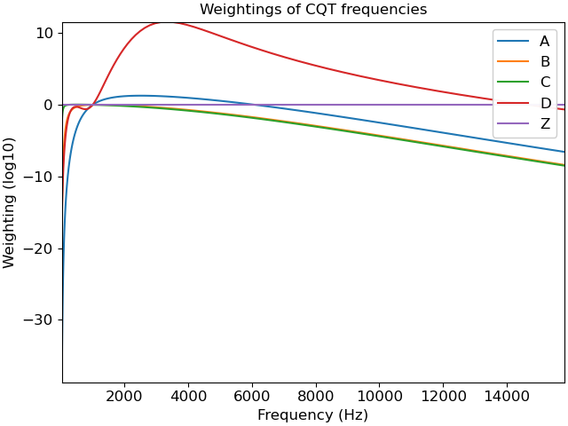

librosa.multi_frequency_weighting¶
- librosa.multi_frequency_weighting(frequencies, *, kinds='ZAC', **kwargs)[source]¶
Compute multiple weightings of a set of frequencies.
- Parameters
- frequenciesscalar or np.ndarray [shape=(n,)]
One or more frequencies (in Hz)
- kindslist or tuple or str
An iterable of weighting kinds. e.g. (‘Z’, ‘B’), ‘ZAD’, ‘C’
- **kwargskeywords to pass to the weighting function.
- Returns
- weightingscalar or np.ndarray [shape=(len(kinds), n)]
weighting[i, j]is the weighting offrequencies[j]using the curve determined bykinds[i].
Examples
Get the A, B, C, D, and Z weightings for CQT frequencies
>>> import matplotlib.pyplot as plt >>> freqs = librosa.cqt_frequencies(n_bins=108, fmin=librosa.note_to_hz('C1')) >>> weightings = 'ABCDZ' >>> weights = librosa.multi_frequency_weighting(freqs, kinds=weightings) >>> fig, ax = plt.subplots() >>> for label, w in zip(weightings, weights): ... ax.plot(freqs, w, label=label) >>> ax.set(xlabel='Frequency (Hz)', ylabel='Weighting (log10)', ... title='Weightings of CQT frequencies') >>> ax.legend()
